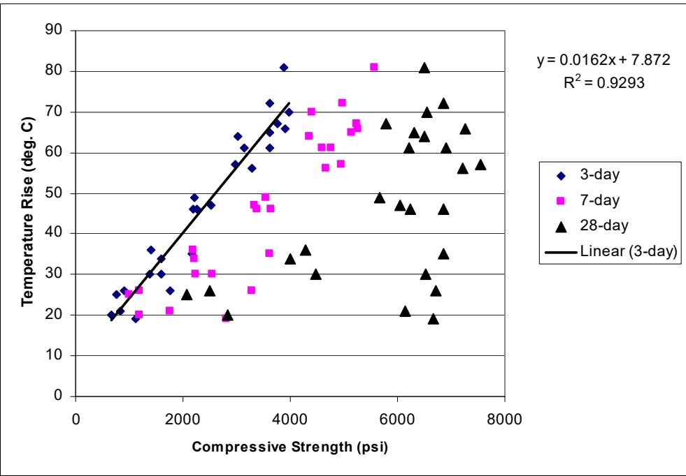
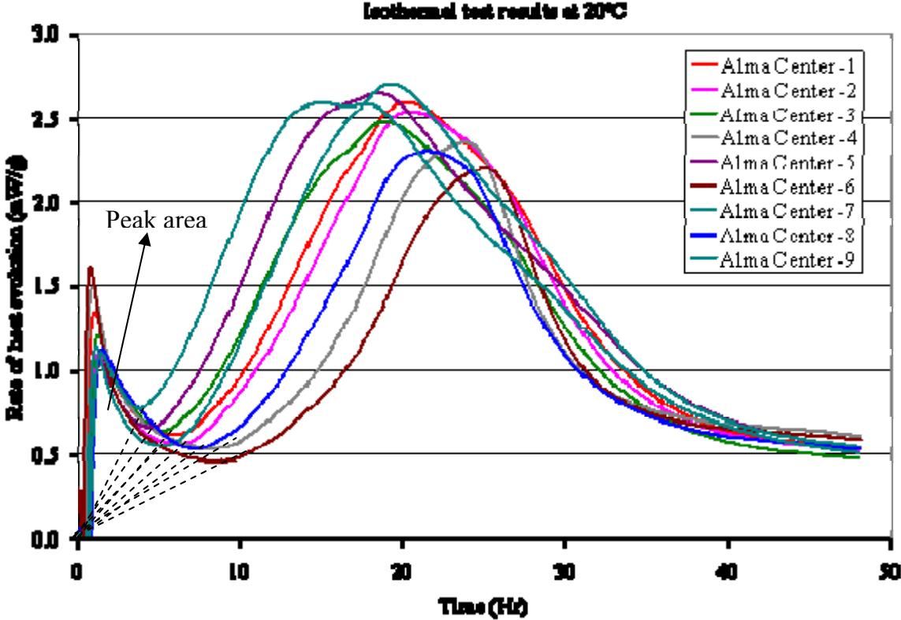
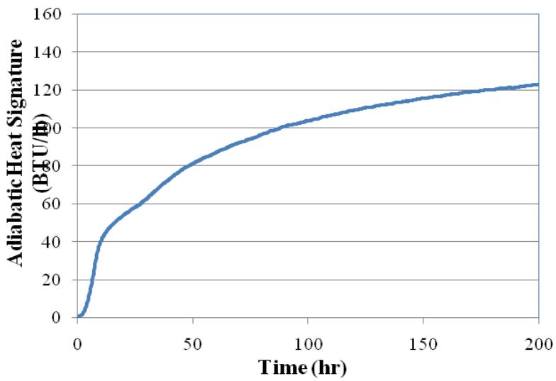
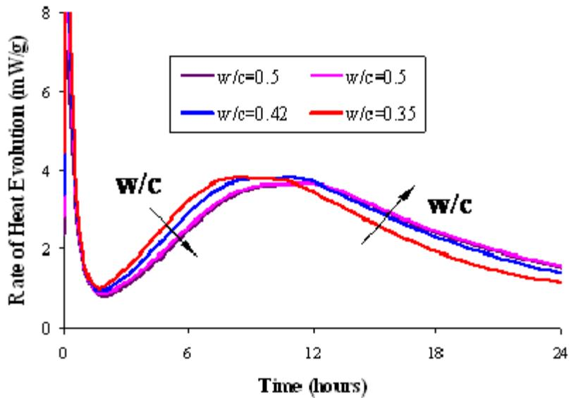
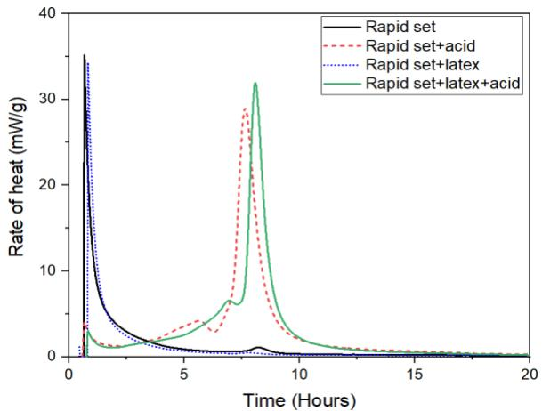
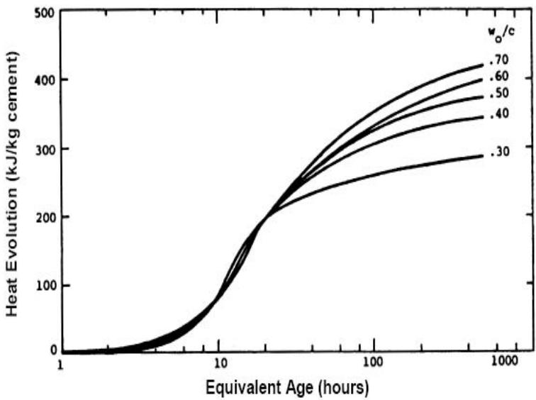
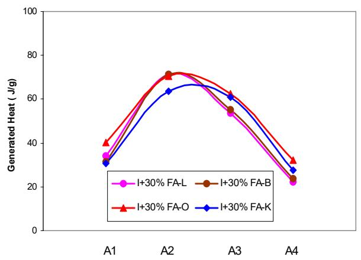
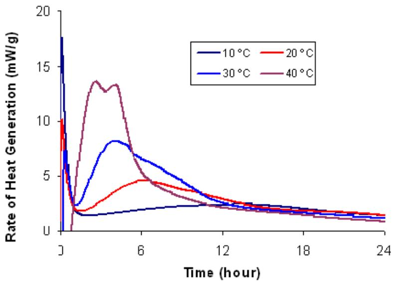

Heat of Hydration
Heat of Hydration is a specific aspect of Cement Hydration, defined as the cumulative thermal energy released per unit mass of cement during the exothermic chemical reactions between cement clinker phases and water [7]. This process involves a number of exothermic chemical reactions that liberate heat, which strongly influences early-age concrete properties such as setting time and strength gain [7]. The rate and amount of heat liberated depends on cement chemistry, fineness, w/c ratio, SCMs, admixtures, and curing conditions. Monitoring this heat evolution allows for the detection of deviations in concrete constituents and the prediction of performance based on the kinetics of cement hydration [7] [1] [2].
Sources (19)
Temperature Rise And Strength
The semi-adiabatic temperature rise of cement pastes exhibits a linear relationship with the compressive strength of mortar specimens, allowing an estimate of 3-day mortar strength to be obtained after approximately half a day since paste tests typically reach maximum temperature within 8 to 14 hours. [3]

Temperature rise of cement pastes versus the compressive strength of mortar specimens [3]The degree of hydration can be computed by pre-processing rate of heat evolution data to remove initial temperature equilibrium peaks, then calculating accumulated heat using the trapezoidal method over time intervals. [4]

Pre-process the data of rate of heat evolution from isothermal tests [4]Chemical Factors Influencing Hydration
The hydration characteristics of concrete are influenced by various chemical and physical factors, including the presence of C3A, which significantly increases the rate and amount of heat, nearly doubling total heat from 0% to 20% C3A. To control this, gypsum/SO3 reduces early heat liberation by retarding the C3A reaction [2], preventing false or flash set while controlling the initial heat liberation rate [2]. Physical properties such as higher fineness (Blaine 3,000–5,000 cm²/g) increase early-age heat but do not affect total late-age heat, while a higher w/c ratio increases total heat, showing a >100 KJ/Kg increase from w/c 0.3 to 0.7. Additionally, high curing temperature accelerates early hydration but may reduce later hydration. Chemical admixtures also play a role: superplasticizers mildly retard concrete setting and reduce adiabatic temperature at early age without affecting the total heat of hydration [2], whereas retarders decrease early-age heat of hydration and temperature rise until values become equal to non-retarded mixes at approximately 3-7 days [2]. Conversely, accelerating admixtures increase the rate of heat evolution at the setting stage and, depending on their chemical composition, may also increase the rate of heat liberation during the hardening stage [2].
The use of specific cement types and dosage variations further impacts thermal profiles. High-alkali cements produce a notably higher temperature rise with an earlier peak compared to standard mixtures, as the added alkalis accelerate the hydration kinetics [5]; consequently, mixtures utilizing high-alkali cements exhibit an earlier temperature peak compared to standard blends, indicating accelerated reaction kinetics driven by alkali content [5]. Regarding dosage, exceeding recommended water reducer dosages significantly decreases early-age compressive strength, though this retardation effect dissipates by 28 days when strengths equal properly-dosed mixtures [6]. Robust testing demonstrates that varying water reducer or fly ash dosages by ±50% shifts the concrete heat-generation curve left or right without causing incompatibility, allowing engineers to establish acceptable heat evolution boundaries for quality control [4]. Therefore, chemical and heat signature testing should be considered to identify incompatibilities between cementitious materials and admixtures, as well as other environmental, production, and transport issues affecting hydration characteristics [3].

Mortar sample [4]The total heat of hydration is nearly doubled when C3A content increases from 0 to 20%, although the reaction stabilizes after sixteen hours regardless of the initial concentration [2].
 b. Hydration rate of cement compounds—in a type I cement paste (adapted from Mindess and Young 1981) [2]
b. Hydration rate of cement compounds—in a type I cement paste (adapted from Mindess and Young 1981) [2]
The peak of the hydration heat evolution curve is postponed by approximately three hours when the water-to-cement ratio increases from 0.35 to 0.5 [7].

Fig nure 15. Effect of water-to-cement ratio on heat of hydratio [7]Retarding admixtures slow the rate of cement hydration to prevent premature setting, which typically results in slowed early strength development but increased later strength compared to non-delayed concrete [8].
Citric acid acts as a retarding admixture in rapid-set cement systems by extending the dormant period and shifting the peak heat generation rate to later times, thereby mitigating the risk of early thermal cracking; in mixtures containing both latex and citric acid, cumulative heat remains lower than control mixes until 7.5 hours before rapidly increasing [9].

Rate of heat generation [9]
Effect of w/c ratio on the heat evolution (RILEM 42-CEA 1981) [2]Heat Of SFSCC Concrete
Self-consolidating flowable slipform concrete (SFSCC) exhibits a heat of hydration that is comparable to or lower than conventional pavement concrete, primarily due to the incorporation of supplementary materials like Fly Ash [10]. In semi-adiabatic calorimetry tests, the heat of cement hydration for SFSCC was measured as slightly lower than that of a standard C3 mix, with the reduction attributed to fly ash content [10]. Specifically, SFSCC mixes demonstrate a later initial set time and an earlier final set time compared to conventional concrete, which influences the timing of heat generation during the hydration process [10]. Pozzolanic supplementary cementitious materials (SCMs) consume calcium hydroxide produced during portland cement hydration to form additional calcium silicate hydrate, a process that generates heat independently of the primary cement reaction [11]. Both SCMs reduce maximum concrete temperature, which leads to a lower thermal cracking risk, and while maximum heat decreases with increasing SCM replacement level, this is not always proportional.
Other additives also influence thermal behavior.
Fly ash delays the peak rate of adiabatic temperature rise (ATR) by approximately 1.5 hours and extends the dormant period, whereas slag replacement does not postpone the dormant period and may slightly accelerate initial set time while still decreasing the maximum concrete temperature [1].
 Effect of slag on ternary cement concrete heat signature [1]
Effect of slag on ternary cement concrete heat signature [1]
Specifically, the addition of Class C fly ash reduces silicate hydration heat, lowering the second peak from 3.0 mW/g at eight hours in plain cement to 1.25 mW/g at 12 hours [12].
High-calcium fly ashes may contain calcium aluminates that require additional sulfates to control their reactions, especially when combined with admixtures [12].
Fly ash replacement in binary cements reduces water demand for a given consistency due to its fine, glassy, spherical particles, which can function as a water-reducing agent and improve flowability; conversely, the Blaine fineness of fly ash (5,337 cm²/g) exceeds that of the portland cement used in the mixture (3,774 cm²/g), indicating a higher specific surface area [13].
Slag replacement increases the water requirement due to particle fineness and irregular shape, though ternary blends with both materials may maintain water-to-cementitious material ratios similar to ordinary Portland cement [1].
Silica fume accelerates cement hydration through its very fine particle size and large surface area, which also fills fine gaps in the cementitious matrix [14].
This silica fume increases the rate of cement hydration by providing nucleation sites for C-S-H and CH formation, significantly raising early-age heat development compared to plain portland cement, though substitutions exceeding 5% to 10% silica fume begin to decrease compressive strength relative to concrete containing only portland cement [11].
Limestone powder influences performance through nucleation effects that accelerate cement hydration by forming hemi- or mono-carboaluminates with aluminates, stabilizing ettringite, and reducing matrix porosity [14].
Measurement Methods and Calorimetry Techniques
Calorimetry methods include adiabatic, semi-adiabatic, isothermal, and solution calorimeters. While heat signature data can be derived in the laboratory using calorimeters, a field-ready version of the adiabatic calorimeter is needed for practical performance-based mix design [15]. Simple field methods include the Dewar Test, Coffee Cup Test, and insulated bucket; specifically, Coffee Cup Test methods using thermocouples compare sample temperature against reference sand to serve as a simple method to check material compatibility [2]. Unthermostated heat conduction calorimeters can quantify retardation and detect cement-admixture incompatibility, with performance governed by ambient temperature stability and heat capacity balance between samples [2]. Calorimetry testing can also detect material incompatibility by identifying abnormal heat evolution patterns, such as an early sharp exotherm followed by a hydration gap between 6 and 12 hours [7]. Typical test durations are ~10 days for concrete (adiabatic) and 12–48 hours for simple semi-adiabatic methods. The semi-adiabatic calorimetry method is standardized under ASTM C1753 for evaluating early hydration of hydraulic cementitious mixtures using thermal measurements [16]. Testing temperature significantly influences concrete calorimetry parameters, as higher testing temperatures reduce the variation in thermal set time compared to lower winter construction temperatures [4]. Furthermore, the magnitude of temperature peaks in semi-adiabatic tests is influenced by the initial temperature, where a lower initial temperature extends the duration required for concrete to reach peak temperature [16].
 Calorimetry test device for measuring the heat of hydration of concrete [16]
Calorimetry test device for measuring the heat of hydration of concrete [16]
Isothermal calorimeters are limited to seven days due to signal sensitivity limitations, making it difficult to distinguish the heat flow signal from background noise beyond this duration [2], and semi-adiabatic and isothermal calorimetry methods yield significantly different estimates of the degree of hydration (DOH), potentially due to variations in total heat prediction models or equipment-specific heat capacity factors [7]. Regarding accuracy, a RILEM Round-Robin test program found that for semi-adiabatic tests, mean temperature rises are 2%–3% below results from adiabatic tests, indicating semi-adiabatic calorimeters can predict adiabatic temperature rise [2]. The AdiaCal semi-adiabatic calorimeter is a field-deployable device capable of recording heat evolution curves, with peak temperatures in pavement mixes reaching approximately 105°F to 115°F within 14.6 hours [5]. Additionally, calorimetry testing conducted per ASTM C 1679 provides standardized heat evolution data, with peak temperatures in specific pavement applications reaching approximately 110°F to 115°F [5]. Calorimetry curves can predict initial set times using the 20 percent fraction method, which correlates well with ultrasonic pulse velocity measurements for determining sawing windows [16]. Initial set determined via calorimetry using the 20% temperature rise fraction method correlates reasonably well with UPV measurements, though both methods may yield different absolute times compared to standard penetrometer tests [17]. As a field-deployable alternative for determining saw-cutting windows, the ultrasonic pulse velocity (UPV) method detects initial set by measuring the increase in sound wave travel time through concrete as hydration products begin to interact [17]. Finally, differential scanning calorimetry (DSC) utilizes heat to drive off moisture and alter samples, producing characteristic peaks that enable the quantification of specific material components such as gypsum content within cementitious systems [18].
Calorimetry analysis of cement paste hydration in the presence of superabsorbent polymers evaluates heat flow and generation rates across four distinct phases: initial formation, dormant period, acceleration period, and deceleration period [19].
For low-temperature differential scanning calorimetry, it is required to hold the sample at room temperature for approximately one hour after combining cementitious powder and salt solution to allow heat from exposed unreacted surfaces to dissipate before measuring [16].
Heat Signature Analysis and Quantitative Metrics
The heat signature of concrete mixtures defines the hydration process and provides estimates for the time to initial and final set, which is critical for determining suitability in hot or cold weather concreting applications [12]. The surface area of the Heat Signature curve characterizes total heat liberated, while heat signature modeling utilizes specific curve parameters including slope 1, slope 2, maximum temperature, area under the curve, and time to maximum temperature to characterize mixture behavior [12]. Under the Heat Index Method (Phase II), six parameters—comprising A1–A4 area-based values plus initial and final set times—characterize the curve for quality control purposes [7]. These parameters are derived from the first derivative and area under the calorimetry curve to characterize mortar features and predict early-age strength up to two days [7]. Because a linear relationship exists between generated heat and compressive strength in mortar samples up to two days, strength prediction is enabled based on calorimetry data [7]. Additionally, the 28/7-day compressive strength development ratio serves as a metric for long-term hydration progress, with typical systems showing a doubling of strength between 7 and 28 days [5].
 (a). Concrete temperatures versus time for heat of hydration [5]
(a). Concrete temperatures versus time for heat of hydration [5]
Regarding specific material behaviors, heat index areas A1 and A2 decrease as fly ash replacement levels increase, while area A3 increases with higher fly ash content, allowing for the detection of changes in mix proportions [7]. Furthermore, heat index areas A3 and A4 can be used to verify correct fly ash dosage, as their calculated values from the hydration curve should be similar when the design content matches the actual mix [7].

Heat indexes for samples with different fly ash replacement levels [7]The cumulative heat of such pastes can increase from approximately 25 J/g to 180 J/g within this window, representing a rate twice that of conventional pavement cement [9].
The activation energy for cementitious materials can be determined from isothermal heat evolution data using the Arrhenius equation [4], while the area under the heat evolution curve between 6 and 18 hours (A3) represents the total heat generated during this specific period, which can be used to characterize concrete set times [7].

Effect of curing temperature on heat of hydration (Type I cement) [7]The first derivative of the calorimetry results (d(q)/dt) can be used to determine concrete set time by identifying the transition period between fluidity and rigidity [7].
 Comparison of the set times from ASTM C 403 and calorimetry tests [7]
Comparison of the set times from ASTM C 403 and calorimetry tests [7]
Citric Acid Effects On Cement
While the addition of citric acid to rapid-set cement extends the dormant period and shifts the peak heat generation rate later, its cumulative heat eventually surpasses non-retarded mixes by 7.5 hours [9]. Furthermore, latex-modified concrete (LMC-VE) can experience a rapid increase in cumulative heat from 25 J/g to 180 J/g between 5 and 10 hours, generating approximately twice the heat of conventional pavement cement pastes [9].
In specific cement types, such as rapid-set calcium sulfoaluminate (CSA) cement, there is no dormant period; instead, it exhibits a sharp heat generation peak between hours 5 and 10, leading to rapid early-age setting and significant thermal cracking risks in thin overlays.
Chemical reaction pathways also differ among materials; alternative cementitious materials undergo independent hydration reactions that produce C-S-H without consuming calcium hydroxide (CH), unlike pozzolanic SCMs which require CH as a reactant, resulting in different strength gain profiles [11].
Related
- Calorimetry
- Cement Hydration
- Heat Signature
- Activation Energy
- Datum Temperature
- Maturity Method
- HIPERPAV
- Cement-Admixture Compatibility
References
- K. Wang and Z. Ge, "Evaluating Properties of Blended Cements for Concrete Pavements," Department of Civil, Construction and Environmental Engineering, Iowa State University, Ames, IA, 2003. [Online]. Available: https://www.intrans.iastate.edu/wp-content/uploads/2018/03/blended_cements-1.pdf
- K. Wang, Z. Ge, J. Grove, J. M. Ruiz, and R. Rasmussen, "Developing a Simple and Rapid Test for Monitoring the Heat Evolution of Concrete Mixtures (Phase 3)," CTRE, Iowa State University, Ames, IA, Rep. FHWA Project 17 (Phase I), 2006. [Online]. Available: https://www.intrans.iastate.edu/wp-content/uploads/2018/03/CalorimeterReportPhaseIII.pdf
- S. Schlorholtz, K. Wang, J. Hu, and S. Zhang, "Materials and Mix Optimization Procedures for PCC Pavements," CTRE, Iowa State University, Ames, IA, Rep. TR-484, 2006. [Online]. Available: https://www.intrans.iastate.edu/wp-content/uploads/2018/03/mco-final.pdf
- K. Wang, J. M. Ruiz, J. Hu, Z. Ge, Q. Xu, J. Grove, and R. Rasmussen, "Simple and Rapid Test for Monitoring the Heat Evolution ..., Phase III," National Concrete Pavement Technology Center, Ames, IA, 2008. [Online]. Available: https://www.intrans.iastate.edu/wp-content/uploads/2018/03/CalorimeterReportPhaseIII.pdf
- P. Taylor, P. Tikalsky, K. Wang, G. Fick, and X. Wang, "Development of Performance Properties of Ternary Mixtures: Field Demonstrations and Project Summary," National Concrete Pavement Technology Center, Ames, IA, Rep. TPF-5(117), 2012. [Online]. Available: https://www.intrans.iastate.edu/wp-content/uploads/2018/03/ternary_final_w_cvr.pdf
- P. Tikalsky, P. Taylor, S. Hanson, and P. Ghosh, "Development of Performance Properties of Ternary Mixtures: Laboratory Study on Concrete," National Concrete Pavement Technology Center, Ames, IA, Rep. TPF-5(117), 2011. [Online]. Available: https://www.intrans.iastate.edu/research/completed/development-of-performance-properties-of-ternary-mixtures-laboratory-study-on-concrete/
- K. Wang, Z. Ge, J. Grove, J. M. Ruiz, R. Rasmussen, and T. Ferragut, "Simple and Rapid Test for Monitoring the Heat Evolution of Concrete Mixtures, Phase 2," Center for Transportation Research and Education, Ames, IA, 2007. [Online]. Available: https://www.intrans.iastate.edu/wp-content/uploads/2018/03/calorimeter.pdf
- C. V. Hazaree, H. Ceylan, P. Taylor, K. Gopalakrishnan, K. Wang, and F. Bektas, "Use of Chemical Admixtures in Roller-Compacted Concrete for Pavements," National Concrete Pavement Technology Center, Ames, IA, 2013. [Online]. Available: https://www.intrans.iastate.edu/wp-content/uploads/2018/03/rcc_admixture_w_cvr1.pdf
- K. Wang, B. M. Shankaramurthy, A. Anand, Y. Sargam, K. Freeseman, and B. Phares, "Performance Evaluation of Very Early Strength Latex-Modified Concrete (LMC-VE) Overlay," Institute for Transportation, Iowa State University, Ames, IA, Rep. TR-771, 2024. [Online]. Available: https://bec.iastate.edu/wp-content/uploads/2024/10/performance_evaluation_of_LMC-VE_overlay_w_cvr.pdf
- K. Wang, S. P. Shah, J. Grove, P. Taylor, P. Wiegand, B. Steffes, G. Lomboy, Z. Quanji, L. Gang, and N. Tregger, "Self-Consolidating Concrete—Applications for Slip-Form Paving: Phase II," National Concrete Pavement Technology Center, Ames, IA, Rep. TPF-5(098), 2011. [Online]. Available: https://www.intrans.iastate.edu/wp-content/uploads/2018/03/SCC_Phase_2_final_report-edited_wcover.pdf
- B. Shafei, P. Taylor, B. Phares, and M. Kazemian, "Fiber-Reinforced Concrete for Bridge Decks," Bridge Engineering Center, Iowa State University, Ames, IA, Rep. TR-767, 2021. [Online]. Available: https://www.intrans.iastate.edu/wp-content/uploads/2021/12/fiber-reinforced_concrete_in_bridge_decks_w_cvr.pdf
- P. Tikalsky, V. Schaefer, K. Wang, B. Scheetz, T. Rupnow, A. St. Clair, M. Siddiqi, and S. Marquez, "Development of Performance Properties of Ternary Mixes, Phase 1," Center for Transportation Research and Education, Ames, IA, Rep. TPF-5(117), 2007. [Online]. Available: https://www.intrans.iastate.edu/research/completed/development-of-performance-properties-of-ternary-mixes-phase-1/
- H. Ceylan, D. J. Turner, R. O. Rasmussen, G. K. Chang, J. Grove, S. Kim, and C. S. Reddy, "Impact of Curling, Warping, and Other Early-Age Behavior on Concrete Pavement Smoothness: EFD Study (Phase I)," Center for Transportation Research and Education, Iowa State University, Ames, IA, Rep. DTFH61-01-X-00042 (Project 16), 2005. [Online]. Available: https://www.intrans.iastate.edu/wp-content/uploads/2018/03/curling_warping-2.pdf
- K. Wang, K. Wi, S. Laflamme, S. Sritharan, P. Taylor, and H. Qin, "Feasibility Study of 3D Printing of Concrete for Transportation Infrastructure," Institute for Transportation, Iowa State University, Ames, IA, Rep. TR-756, 2020. [Online]. Available: https://intrans.iastate.edu/app/uploads/2020/10/concrete_transportation_infrastructure_3D_printing_feasibility_w_cvr.pdf
- D. Harrington, R. Rasmussen, D. Merritt, T. Cackler, and P. Taylor, "Long-Term Plan for Concrete Pavement Research and Technology—The Concrete Pavement Road Map (Second Generation): Volume II, Tracks (FHWA-HRT-11-070)," National Center for Concrete Pavement Technology, Iowa State University, Ames, IA, 2012. [Online]. Available: https://www.fhwa.dot.gov/publications/research/infrastructure/pavements/pccp/11070/11070.pdf
- X. Wang, P. Taylor, and D. King, "Evaluation of Modified Concrete Mixture Proportions for the City of West Des Moines," National Concrete Pavement Technology Center, Ames, IA, 2016. [Online]. Available: https://www.intrans.iastate.edu/wp-content/uploads/2018/03/WDM_modified_concrete_mixture_proportions_w_cvr.pdf
- P. Taylor and X. Wang, "Comparison of Setting Time Measured Using Ultrasonic Wave Propagation with Saw-Cutting Times on Pavements," National Concrete Pavement Technology Center, Ames, IA, Rep. TR-675, 2015. [Online]. Available: https://www.intrans.iastate.edu/wp-content/uploads/2018/03/PCC_setting_time_and_joint_sawing_w_cvr.pdf
- J. Grove, G. Fick, T. Rupnow, and F. Bektas, "Material and Construction Optimization for Prevention of Premature Pavement Distress in PCC Pavements," National Concrete Pavement Technology Center, Ames, IA, Rep. TPF-5(066), 2008. [Online]. Available: https://www.intrans.iastate.edu/wp-content/uploads/2018/03/mco-final.pdf
- B. Zhou, P. Taylor, and K. Wang, "Superabsorbent Polymer in Concrete to Improve Durability," National Concrete Pavement Technology Center, Iowa State University, Ames, IA, Rep. TR-793, 2025. [Online]. Available: https://www.intrans.iastate.edu/wp-content/uploads/2025/04/superabsorbent_polymer_in_concrete_w_cvr.pdf